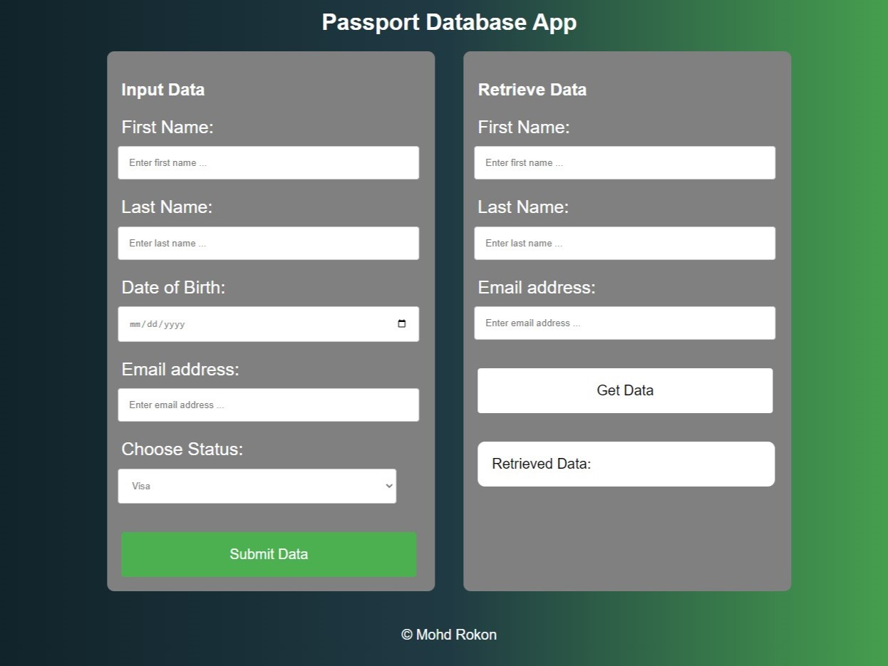
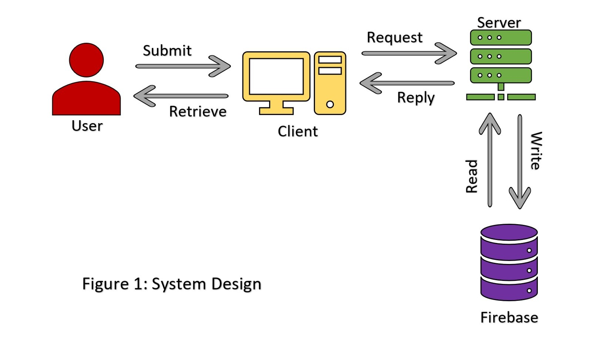

Embassy Application Tracker
Embassy Application Tracker is a web application designed to track internal applications for visas, passports, and IDs at the Embassy for Bangladesh. The application is designed with a clean and intuitive user interface to make it easy for embassy staff to manage and track applications. The front end of the application is built using HTML and CSS, while the backend is written in JavaScript. The data is stored in a NoSQL database, specifically Firebase, and the application is hosted on AWS.

System Design & Architecture
The Embassy Application Tracker system consists of three main components: the front end, the backend, and the database.

Front End: The front end of the Embassy Application Tracker is built using HTML and CSS. It is designed to be user-friendly, with an intuitive interface that allows embassy staff to easily navigate the application tracking process. The front end communicates with the backend via REST APIs, which are responsible for processing requests and responses.
Backend: The backend of the Embassy Application Tracker is written in JavaScript, specifically using Node.js. It is responsible for processing requests from the front end and querying the database to retrieve and store data. The backend also includes the REST APIs that are used to communicate with the front end.
Database: The database for the Embassy Application Tracker is a NoSQL database, specifically Firebase. It is designed to store application data in a structured format, making it easy for embassy staff to search and retrieve information about specific applications.
Hosting: The Embassy Application Tracker is hosted on AWS. AWS provides a scalable and reliable hosting environment that allows the application to be accessed from anywhere in the world. AWS also provides a variety of tools and services that can be used to monitor and manage the application, ensuring that it remains available and secure at all times.
Overall, the Embassy Application Tracker is a robust and reliable system that provides embassy staff with an easy-to-use application tracking platform. With its intuitive interface, powerful backend, and scalable infrastructure, the Embassy Application Tracker is a valuable tool for any embassy looking to streamline its application tracking process.